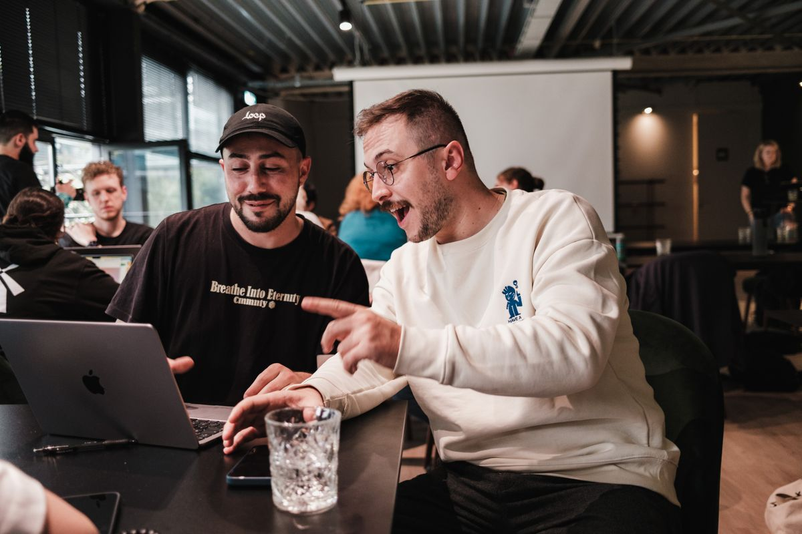
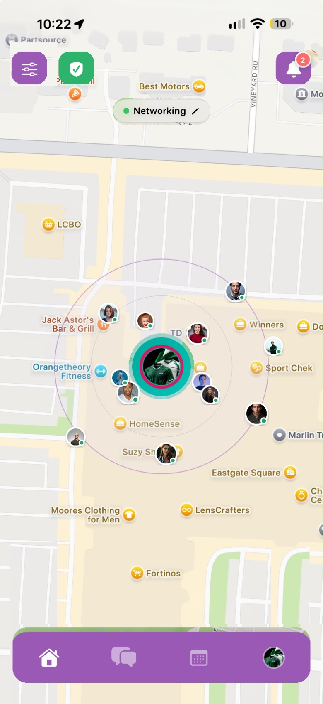

At the park
Company for your next walk
You’re heading out for some fresh air. Someone nearby enjoys a walk too. A shared route gives you time to talk and get to know each other.
Live now on iOS and Android
A walking partner. A gym buddy. Someone to talk books with. ProxiMeet helps you connect with someone nearby who shares your interests—and turn that connection into time together.
Free to download. Not in your city yet? Join the waitlist — we’re rolling out city by city.
Ways to connect
You don’t need a big occasion to meet someone. Start with something you’d like to do together.
You’re heading out for some fresh air. Someone nearby enjoys a walk too. A shared route gives you time to talk and get to know each other.
Find someone who shares your interest in fitness. Arrange a session together, encourage each other, and have someone to celebrate the effort with.
You’ve finished a book and want to talk about it. Meet someone who enjoys reading, swap recommendations, and discover what you might pick up next.

You have an idea for a project, a photo shoot, or something you’d like to make. Connect with someone nearby who shares that interest, talk it through, and see what you could create together.
How it works
Tell people what you enjoy and what you’d like to do together. It gives you something to talk about from the start.
Discover people nearby with interests in common. When someone feels like a good fit, send a connection request.
Once your request is accepted, agree on a public meeting spot nearby. Use chat to sort out the details, then continue the conversation face to face.
A look at the app
Open ProxiMeet and your area comes to life — a living map that shows who’s nearby and online for the same reasons as you, from networking to a workout to a walk.
Set your reasons, and when someone nearby matches them, you both already know why you’re saying hi.
Get the app
Safety & choice
Plan your check-in and manage what you share, all from your Safety centre.
Safe Meet
Location sharing
Choose who can see your live location during a meetup.
Hidden places
Save places such as home where ProxiMeet keeps you offline automatically.
Accept the requests you want. Block the people you don’t want to hear from.
ProxiMeet is built for people of all ages to find common ground through shared interests and real-world connection.
ProxiMeet helps two people nearby connect over shared interests and arrange to meet in person.
Everyday passions — think music, books, photography, gaming, film, fitness, and more. You choose what represents you.
ProxiMeet uses a map-style view to help you discover people nearby with shared interests. From there, you can send a connection request.
No. Connections start with a request you choose to send or accept — and chat only opens once both of you are in. What happens next is always up to you.
Right now — ProxiMeet is live. Download it on the App Store or Google Play. If it isn’t available in your city yet, join the waitlist and you’ll hear the day it arrives.
ProxiMeet is live
Free to download. Not in your city yet? Join the waitlist — we’re rolling out city by city.
Let’s talk
Support, feedback, press, or partnerships — send us a message and we’ll get back to you.